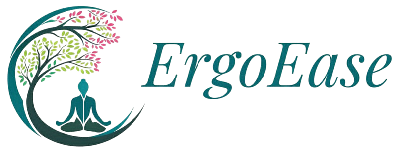

Welcome to ErgoEase
"Take control of your pain with personalized ergonomic solutions"
Get customized exercises and advice based on your specific pain type and severity level.
🎯
Targeted Solutions
📱
Mobile Friendly
⚡
Quick Assessment
Start Assessment
Where do you feel pain?
Select the area that best describes your discomfort
🧠
Headache
🦒
Neck Pain
💪
Shoulder Pain
🔼
Upper Back
◀▶
Middle Back
🔽
Lower Back
🧠
Headache
Tension and stress-related head pain
⚡ Common Symptoms
Throbbing or aching pain
Sensitivity to light
Neck tension
Back
Continue
How severe is your pain?
This helps us recommend the most appropriate exercises
MILD
Noticeable but doesn't interfere with daily activities
MODERATE
Interferes with some activities, occasional sharp pain
SEVERE
Significantly limits daily activities, constant discomfort
📊
Mild Pain Level
Pain that is manageable with basic care
📈 Pain Scale
1-3 out of 10 pain level
Doesn't interfere with work
Manageable with rest
🎯 Recommended Action
Gentle stretching exercises
Basic self-care methods
Monitor symptoms
Back
Get My Plan
Your Personalized Plan
Back
Start Over